I'd like to show you what I can do. Here, you can get a solid idea of my work process, how I approach finding the solution to a problem.
Ganbare
A simple, effective training app built for easy tracking and scheduling.
My partner and I train for several sports each week — our plans used to live
across a spreadsheet, a notes app, a timer, our calendars, and pen and paper.
Ganbare centralises all five in one weekly view we actually open every day.
A simple, effective training app built for easy tracking and
scheduling.
*pronounced gahn-bah-reh, "do your best" in Japanese
Role
Product & UX, solo
Users
2 — myself & my partner
Platform
Web app
Status
Live & in daily use
01 The Product
One app with the core features needed by both users: the homepage hosting the
weekly plan, today’s workout(s), a workout builder, an in-workout tracker,
and a library to host the training activities.
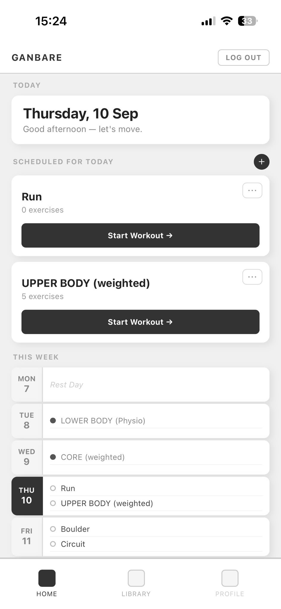
Homepage & Weekly View
An overall view of what’s coming up — what workouts are planned
or completed for today and the rest of the week:
Single view of the week.
Replaces the rebuild-every-week spreadsheet and calendar.
Planning now takes under 5 minutes.
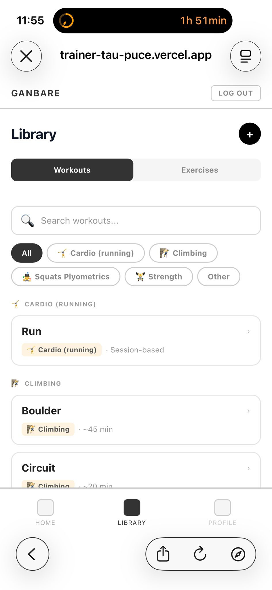
Workout & Exercise Library
A library of workouts and exercises where you can:
Assemble a workout from saved exercises.
Choose different metrics for their exercises.
Write notes in one place, all modular.
Access a library of bespoke workouts [15+ workouts, 10+ workout
filters, 20+ individual exercises uploaded in the libraries created so
far].
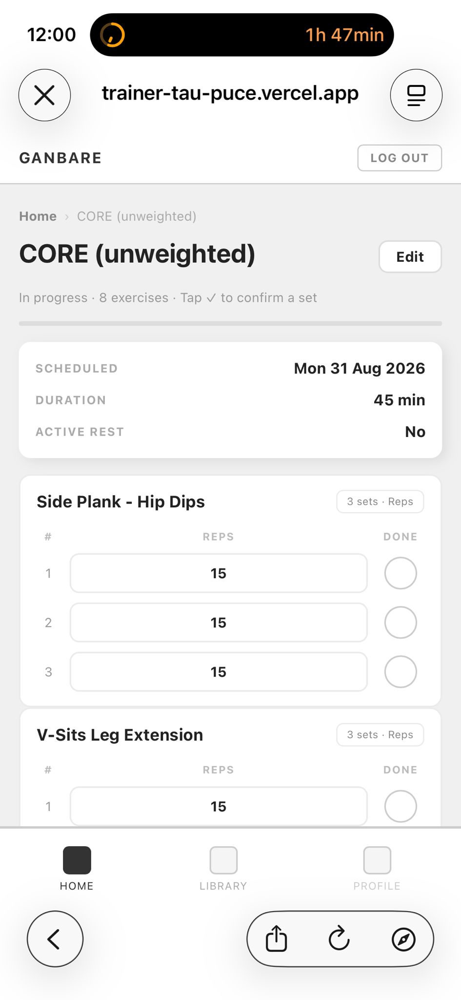
Live Workout Tracker
An open workout. Here, you can see some overall stats at the top, as well as
check boxes that can be ticked off when doing the workout. Tracking
today’s workout & its metrics:
Tick off duration, sets, reps in real time for each scheduled
workout.
Replaces the standalone timer + pen & paper tools.
Used in 30+ sessions since launch so far.
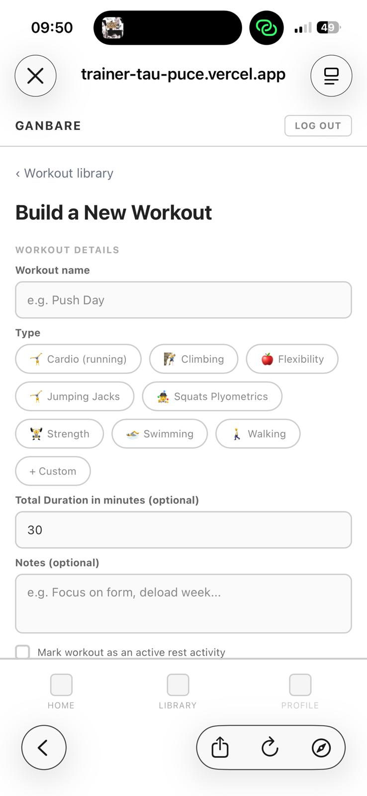
Workout Builder
Your own bespoke workout builder where you can:
Create, edit and delete workouts.
Choose a bespoke workout structure — between exercise or
session-based, each with its own metrics.
Replace notes and floating workout details altogether.
I’m not a visual designer and my knowledge of creating UI is basic.
Opting for a minimalist app style and behavior was the right decision on multiple
fronts. I felt a strong pull towards spending time making the app look visually
great, but it needed time I didn’t have. The app didn’t need to be a
visual piece of art for us to start using it, or to function how we needed it to.
We needed a usable app fast so we could improve our training scheduling methods.
The decision was challenging. The idea of releasing the app with a stand-in
design, instead of a finished one, was frustrating, I wanted the app to look good
right away, but realized that iteration would lead towards continuous
improvement.
What was needed
A straight-to-the-point structure for each core action supported by a
simple design.
Clear split between necessary features and nice-to-haves: e.g. custom
icons, animations, our own distinct branding.
Bringing focus back to our core goal: organize, schedule and commit to
a training discipline for a healthier life.
An app we can start using ASAP to start improving our training + its
scheduling, and build consistent habits.
The trade-off
Opting for a minimalist, stripped-down design — instead of
investing time I didn’t have to learn how to design advanced UI.
Adopting minimalism as design philosophy — a deliberate,
potentially permanent choice to keep focus on core actions.
A design with room for growth — leaving the door open for
revising and improvement.
Accepted shipping this version instead of waiting for a finished
design, despite wanting the app to look good immediately.
Re-framed the decision around iteration: continuous improvement over
upfront perfection.
The result
An app released approx. 3 weeks earlier, used daily by both of us to
schedule and organize our training.
Core actions that are intuitive and easy to navigate.
An enjoyable UX, devoid of clutter and visual noise thanks to a clean
and minimalist design.
It allowed us to spot fast several functions that were either missing
or clumsy: e.g. removing a weekly progress feature that cluttered the
homepage and cluttered the user with unnecessary data.
Manual entry over automatic tracking → making training intentional
Neither of us wear smartwatches. We both wear a smart ring, but these
don’t track training beyond daily steps, which isn’t our objective.
So I chose against wearable integration — logging by hand means we
prioritize a mindful and deliberate approach towards our training. The planning
element of our week turned out to be crucial to create and encourage discipline.
When we tried without it, both of us ended up in a reactive cycle of random
training sessions, training whenever we felt like it or had the time. It made for
a hectic training plan, born out of availability instead of intentional planning.
This completely affected our overall attitude towards it. Manual entry made every
workout intentional by being thoughtfully planned. It gave us a feeling of
empowerment, especially at a time where tech can take over a lot of the
decision-making we do everyday. It also gave us a higher sense of satisfaction
when looking back on completed training at the end of the week.
What was needed
Deliberate planning — encouraging an intentional approach to our
training.
Logging workouts by hand instead of relying on wearable
integration.
The ability to plan our week to encourage discipline in our fitness
approach.
The trade-off
No automation means a bit more time spent planning — we could
have opted to integrate an AI assistant to remove some weight that would
come from the decision-making process.
The result
A feeling of empowerment: when we see or feel progress, we know
it’s the direct result of our efforts.
Added encouragement: we are in control of our training, we can see how
our decisions impact our health and training. This gives us a stronger
sense of ownership.
A higher sense of satisfaction when looking back on completed training
sessions at the end of the week.
Built for two users, not two million → focusing on our objectives
Considering that the product was for our personal use and for my case study, I
narrowed down the user market to the two of us only. In this particular case, we
didn’t need to spend our time and resources analyzing a wider market for
which the app wasn’t built.
I decided against creating an onboarding flow. Since I was creating a bespoke
app for ourselves, it would be more efficient to focus on intuitive actions for
us to jump in and start our training organization right away.
This meant that we were able to ship faster without compromising on user
research, since we had access to the main two every day for testing and feedback
gathering. The data samples being smaller to analyze, we were able to fast-track
the product from ideas to prototype.
The duality between being the product manager and the user at the same time
put me in the interesting position of being both the observant and the observed,
regularly switching perspectives and advocacy.
What was needed
A bespoke and narrowed-down user research.
The trade-off
No onboarding flow for the app.
[For future app updates: smaller data samples available for analysis
compared to commercial products that require large samples of user
data.]
The result
Optimized and intuitive user actions on the app.
Bespoke product, designed for 2 users and their exact needs.
Fast-tracked product: moving faster from ideas to prototype.
Keeping the goal and training block layers for the next version → focusing on workout features and weekly scheduling
So far, we had kept one habit throughout the initial process: organizing
training by blocks (between 3–4 week blocks), and defining set weekly goals
per block. We used a recap on the Excel sheet to list, schedule and track the
weekly goals by the following metrics:
type of workouts (run, swim, climb, etc.)
number of workouts to complete any given week per block
tracking the scheduling of workouts (e.g. 2 out of 3 completed, 1 out of 4,
etc.)
live workout status (completed or missed)
We used this feature regularly. It was an added layer of structure preceding
the actual assignment of a workout to a date.
However, we jointly decided not to bring this feature forward in the app
design. Three reasons behind the decision: feasibility, complexity/cost, and
urgency.
What was needed
An app we could start using right away to start scheduling training
immediately.
An MVP that could hold the majority of key features of the Excel
system, without this feature.
An easier structure to implement so that we could start using, testing,
and iterating within a short time-frame.
The trade-off
Removing the existing, regularly-used habit of organizing training by
block.
Removing for now the added layer of planning before individual workouts
were assigned to dates.
Focused on an MVP that could function without it.
The block structure was more complex to implement, so we deferred it to
the future next app version.
Building it would have delayed launch by several weeks.
The result
A clear and simple structure for organizing training: everything happens
on the homepage, scheduling is done via the weekly view.
We were able to use the app within 3 weeks.
This allowed us to spot key changes that needed to happen right away.
E.g. using different font/text in the weekly schedule to separate training
from rest days.
03 The Problem: 5 tools, 0 picture
My partner and I train for several sports and physical abilities in any given
week. Exercise is a key part of leading a healthy life, but typical challenges
include staying consistent, falling back on discipline when motivation flags, and
staying organized in your training.
Up until now, we were organizing and tracking our training across 5 different
platforms:
Excel spreadsheet on Google Drive
Gmail calendar
iPhone notes
iPhone timer
Pen & paper
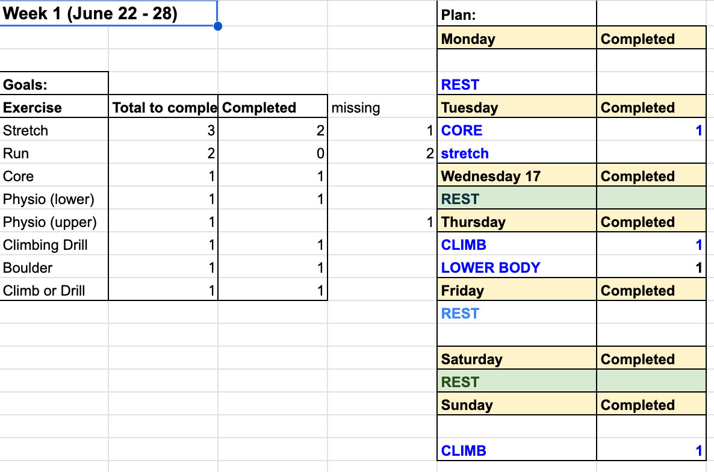
1 · Excel spreadsheet
Weekly plan & scheduling:
Scheduling workouts.
Tracking when each session happens.
Setting a weekly goal.
Manual weekly rebuild.
Disconnected from workout plans, timer, notes.
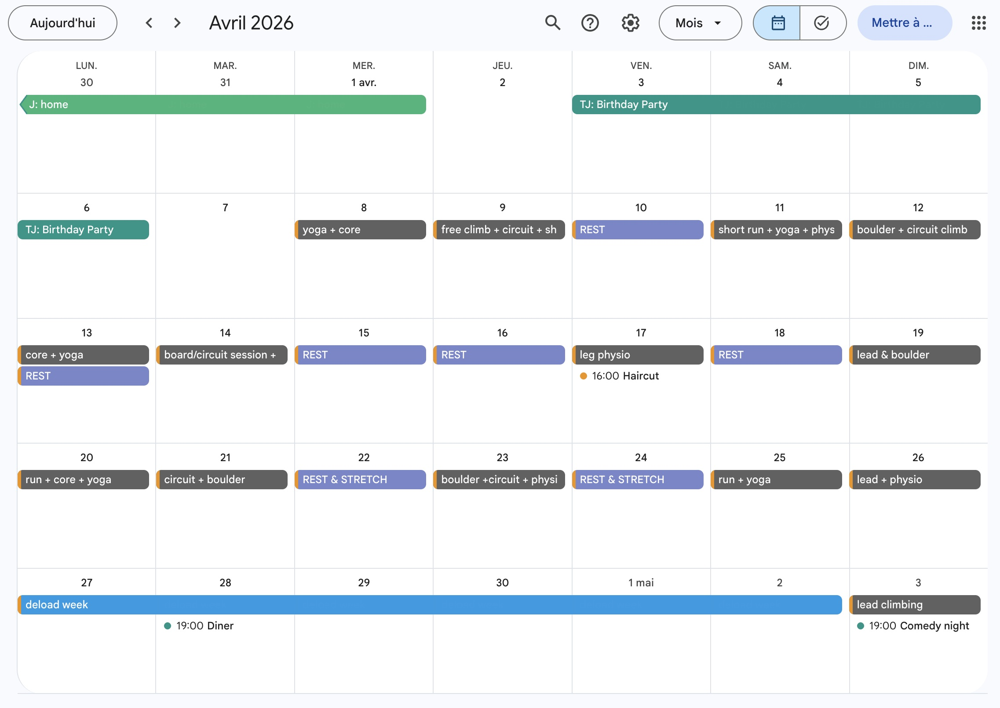
2 · Gmail calendar
Scheduling workouts:
Assigning workouts to dates.
High-level view over extended period of time: helps to see when was the
last time a type of session was done.
Helping avoid recovery clashes.
The only clear organized view we had.
No workout details.
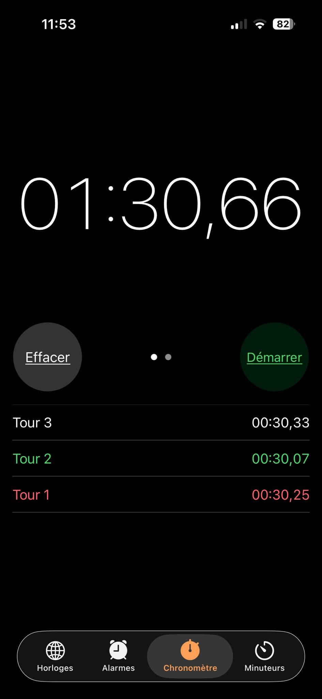
3 · iPhone timer
Tracking duration:
Interval reps.
Duration-based exercises (e.g. plank).
Tracked outside any record of the session.
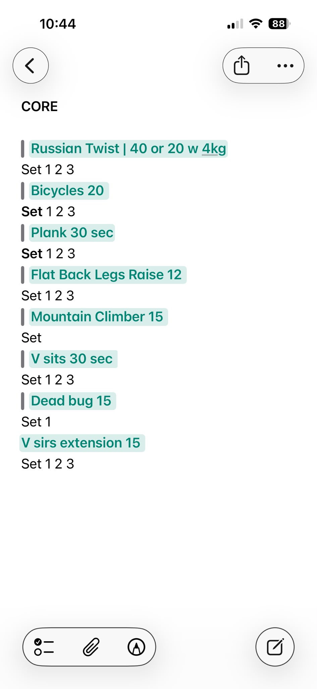
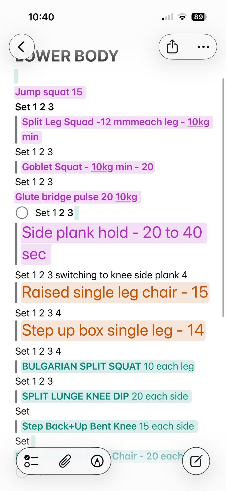
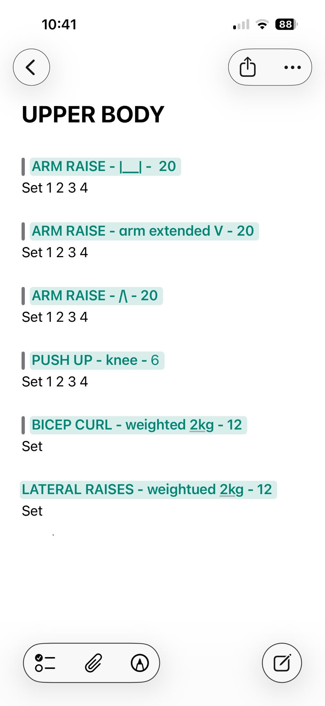
4 · iPhone notes
Detailing exercises within workouts:
For workouts outside the home.
Assigning and writing down exercises in a workout.
Tracking reps.
Separating workouts by muscle/body area groups.
Disconnected from the schedule.
Messy to update during a workout.
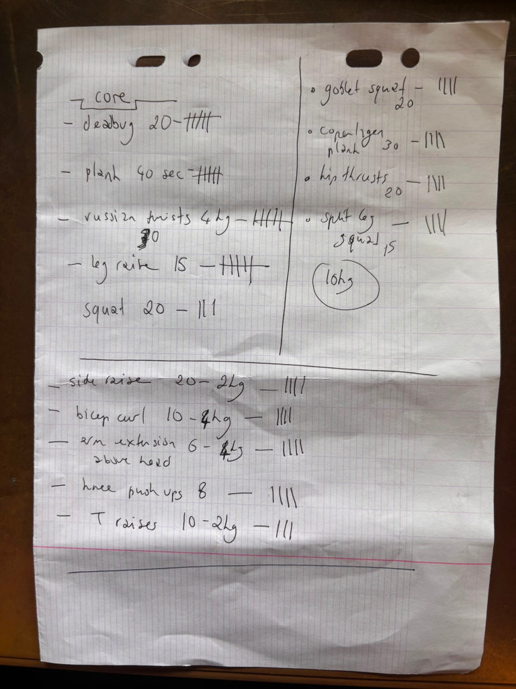
5 · Pen & paper
Tracking reps in home workouts:
Making sure reps are not forgotten.
Quick notes jotted down every session.
Not formatted for archiving.
Multiple sports, many environments, different muscle targets, busy schedules,
lots of tools, no centralized view. We had reached for whatever tool fit each job
— and lost the ability to see any of it together.
The whole process felt messy, dispersed and unsustainable long term. It kept us
going for a while, but we realized it was a temporary solution that wouldn’t
support our long term goals.
My partner shared the same process for his training and faced similar
difficulties in his training organization.
Once we committed to structured training across multiple sports, we needed a
tool to stay organized but more importantly, committed. We wanted:
A structure that would hold us accountable, not just looked organized.
A way to keep tabs on our progress and help us manage our week between
training, recovery days and our favorite sport activities.
The ability to plan sessions easily, create and log workouts, time intervals,
record sets and reps, see the week at a glance, all in one place.
We combined our skills and knowledge to solve our problem and created Ganbare:
the app to help us achieve our fitness goals, support our exercise habits and honor
our long-term commitments to a healthy life.
04 Why build Ganbare
We had our mutual reasons to build an app together.
We are on this big health journey of building a healthier lifestyle through our
fitness: making healthy habits a core element of a good life quality as we age.
To achieve that goal, we needed a tool that could:
Help us commit to our training goals through its design and features.
Encourage us to stick to new, healthy habits.
Bring consistency within our training.
Materialize abstract goals through quantifiable data.
Condense the essential features of our initial system in one place.
Why an app?
I use my smartphone everyday. The device is a big part of my routine since it
helps me perform a majority of my daily tasks. My partner also uses his phone in
the same capacity. On top of that, we always take our phones wherever we train,
whichever the activity. Since it was already a regular feature within our
training, we wanted to use that continuity.
It made sense for the solution to our problem to live in our phones, hence an
app. We both already had the habit of using our phones engrained in our daily
lives, so we built onto this habit to insert Ganbare in our routine.
What each of us wanted to take away from the process
Juliette — Product Lead
Have a training app ready to use, on my phone and tailored to my needs
and goals.
Work through the product management process — start to finish.
Learn how to use product tools e.g. Figma for design, Claude AI, VS
Code, and GitHub: take on the role of prompter, iterator and reviewer
within the process.
Test knowledge gained from completing UX design + product management
courses.
Learn how to use AI in the process, experience its power, identify its
limitations.
Find my place within the AI product landscape: how can I work with it,
what can it do, where is it lacking and where do I come in.
Have a ready-to-share portfolio and case study to increase profile
visibility in interviews.
Partner — Backend & Software Development
Learn about the app building process.
Have a bespoke app in his phone that supports his training effort.
Learn how to vibe-code using an AI agent like Claude.
Build a full app with htmx + Golang.
Learn how to use Figma.
05 The thought process
I drew from the product design framework to guide my next steps: these are
divided in the following 4 sections.
Empathize — Living the problem
Define — Scoping the MVP
Ideate — Sketch, flow, then build
Prototype & Test — Ship it into our own week
I Empathize — Living the problem
Time for user research. I needed to understand the problems we faced as users.
What was the current situation? What problems did we keep facing? What did we want
vs need?
I spent 2 months using all 5 tools in different locations to flesh out their
advantages and limitations. How the process made me feel overall and in details.
The experience and observations I made guided the design of the replacement
product.
Questions I needed answers to included:
What are our respective user stories here?
What’s the problem statement?
Key findings
Error prone: any change within the schedule (be it type of
training or dates) meant several documents needed to be updated consistently and
manually: opening the door wide open to errors and omissions.
Tedious: updating all the documents required time and
created frustration. Resulting in feeling a strong sense of wasting time for
both users.
Wasteful — several disadvantages of loose papers:
Tracking over time is impossible if the data isn’t saved in one
place. We had no way to verify progress or decline in training.
Waste of paper & easy to lose floating papers.
Losing workout flow: it was difficult to update or locate a
specific exercise on phone notes when fully immersed in a workout. It broke the
workout flow.
Accessible Design
One key learning that really stood out when studying for the Google UX Design
course was including principles and frameworks of accessibility within the
product management process.
We were designing for 2 users only (us), and neither user has a disability to
consider when creating the app. Our user research and usability studies were
limited to a small sample of users as well. Nevertheless, I wanted to think
about accessibility in design as a key part of the app process. Part of my work
towards becoming a product manager is to consider accessibility as a fundamental
element, making the design thinking framework.
I briefly tested some assistive technologies while going through the course,
but realized while creating Ganbare that there are many aspects I’m not
taking into account yet when designing for accessibility. The Google UX Design
course was a great introduction to principles of UX and accessibility, it
covered the foundations well. But there is a lot more I must learn about, which
will happen through being exposed to more products, and by virtue of getting
stuck in more product projects.
II Define — Scoping the MVP
User story 1
As a person who wants to improve their fitness, I want to plan my training
conscientiously so that I can live a long and healthy life.
User story 2
As an outdoor enthusiast, I want to make sure I’m doing the necessary
physio work to strengthen my muscles, so that I can enjoy the activities I
love without injuring myself.
Problem statement 1
Juliette is an active person who needs a better system to organize her
weekly training because she wants to keep enjoying doing different
sports.
Problem statement 2
User 2 is a busy professional who needs an enjoyable scheduling system to
plan his workouts because he wants an experience that positively reinforces
habits.
This framework helped us identify 4 core actions the app needed to perform:
Schedule all training in one weekly view with today’s reminder.
Build and save workouts and exercises (all bespoke).
Track and log a live workout and its metrics.
Access a library of all created workouts and exercises with the ability to
edit it.
Key findings
Centralize our tools: one place for everything, one tool to
schedule and track it all. With the ability to add a set of details to
distinguish workouts from one another: by filter categories, and metrics nature
(exercise or session based).
I also confirmed the user problems:
We were using too many tools for one set of goals, which could be managed in
1 location only.
The first tools we used were completely disconnected from one another.
We kept losing time updating all the documents every time a change needed to
be made.
III Ideate — Sketch, flow, then build
Competitive audit: conducted a short audit on a select
sample of competitors’ offers [Strava, Crimpd, Nike Training Club, Apple
Health] to see what designs were currently trending. Looked at their offers, how
they were structured. Wrote down what worked well, what didn’t and audited
my current ideas based on my evaluations.
Lo-Fi design: sketched out with pen and paper my initial
ideas: drew low-fi wireframes to establish initial user flows and the
information architecture of the app. Got all core flows on paper.
Iterated with AI on POC: moved to VS Code, using Claude AI
to bring initial designs to life, going through several iterations.
Move to Figma: recreated the wireframes on Figma so that I
could keep on iterating and create interactions.
Iterate on Figma: both of us tested, iterated and reviewed
the wireframes before moving them to dev.
Pen + paper
Sketch ideas quickly and freely, draw wireframes.
VS Code & Claude
Create low-fi wireframes with prompts based on pen & paper work.
Iterate and review designs.
Figma
Moving low-fi wireframes into Figma to test interactivity & continue
iterating.
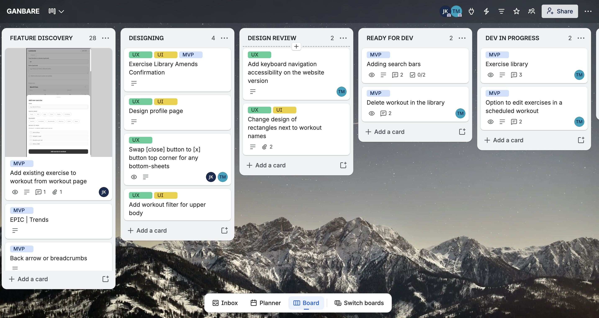
The Kanban board [Trello] to keep track of all tickets and assigned
tasks, reviewing and updating the board every day.
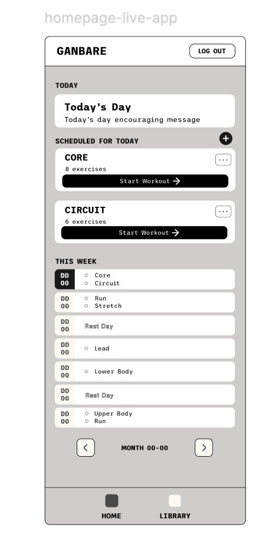
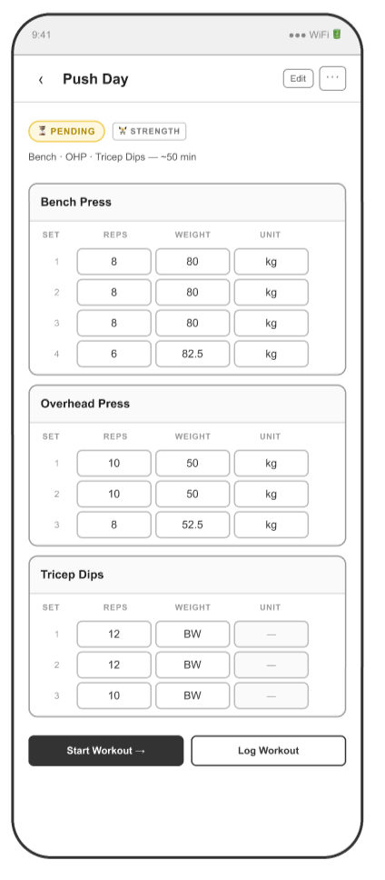
Low-fi wireframes made with AI
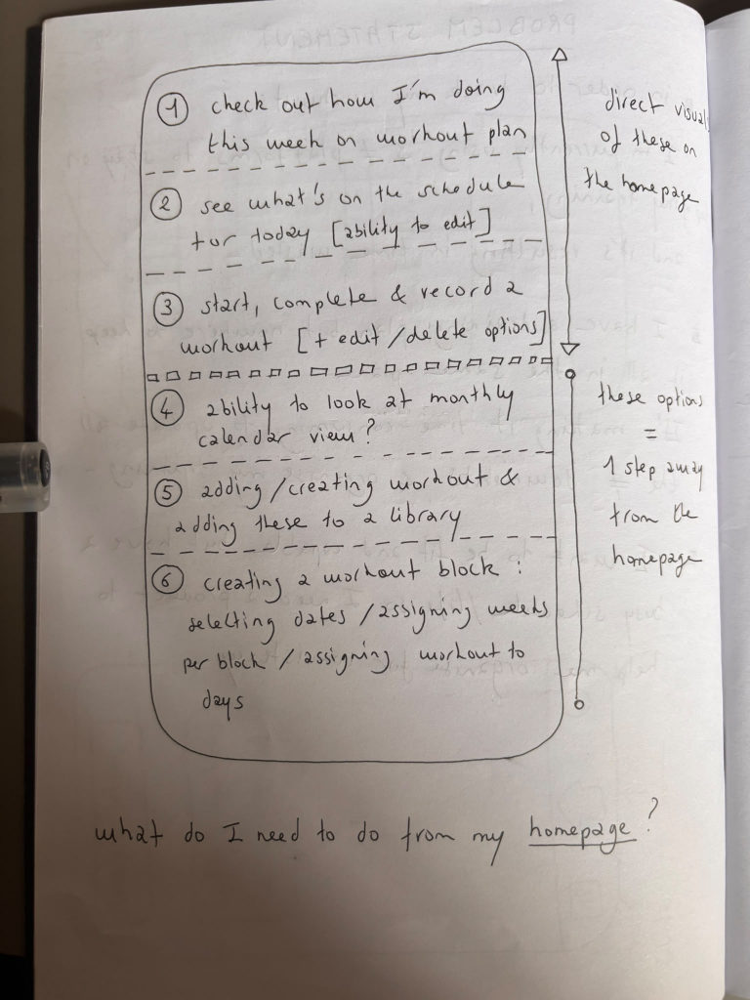
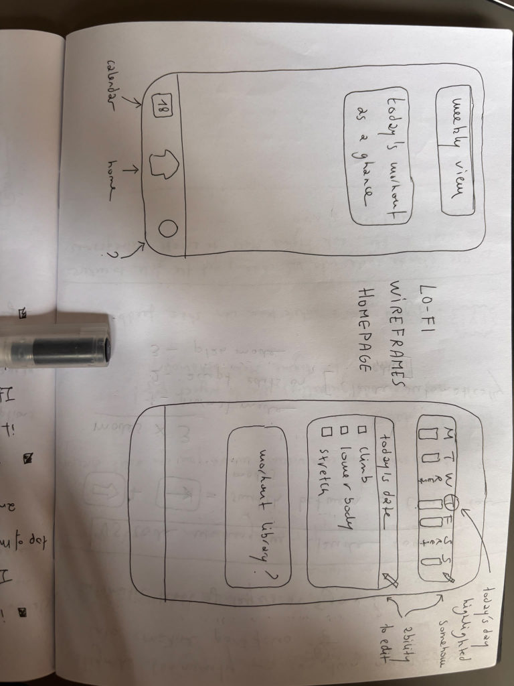
Sketching with pen & paper
Using AI in my ideation process
I used Claude as an AI agent through the iteration process, focusing on the
quality of my prompting, adopting a position of reviewer. I had done my own user
research before introducing Claude in my work flow. I had observed what we needed
as users, identified our pain points, confirmed what our user problems were.
I certainly found AI very helpful: I was able to iterate designs despite my
lack of knowledge in visual design, I could focus on my ideas and bring them to
life easily. I also came across its limitations such as inaccuracy for example. On
top of that, it couldn’t replace my own experience, taste and appreciation
of design.
I started working with AI knowing that if I wasn’t mindful, any work
produced with it would sound like any other product owner and UX designer using
AI. The shortcut is tempting: wireframes and iterations can end up looking
extremely polished and ready for a sped up release. However, this process
doesn’t replace the results of going through the UX design framework.
I agree with experts who forecast a decline in product quality created with AI
only: the next few years will confirm the need for polyvalent product managers who
have expertise based on human experience.
Key findings
AI’s impact on product: AI is changing UX design and
how designers work, becoming prompters, iterators and reviewers.
Design in Code: using VS Code and Claude to build initial
designs & iterate is more efficient than starting designs from scratch on
Figma.
UI kit first: start with building a material design UI kit
first on Figma to create the foundational components that will be repeated
across many wireframes and user flows: so that any changes made in the UI kit
will carry across all instances.
Naming consistency: stay consistent in naming conventions
across Figma frames.
Beyond Trello: Trello feels limiting. It works fine for a
2-user product like Ganbare and a small team. I’ll be looking into other
alternatives to find something more polyvalent. Using dependency features within
a Kanban board would be ideal.
IV Develop & Test — Ship it into our own week
We launched a first structural version of Ganbare to start testing theories and
iterate on designs and flows. The app design and UI were not finished. I started
using the app, treating each test as a usability study. I spotted gaps and areas
for improvement, then implemented updates such as this one:
E.g. when editing a saved workout in the library, the changes only apply going
forward. Any instances of that workout already scheduled, completed, or logged
before the edit remain unchanged. Previously, altering a workout saved in the
library would change all existing instances past, present and future, tampering
with the data entered.
Every real training week was a usability test for us to identify friction.
Key findings
Ship early: getting the app out live as soon as possible
allowed us to start testing immediately our interactions. We identified within
the first two app uses areas in need of improvement that we hadn’t
spotted while checking the user flows. Test it to improve it.
Product logs: at the end of every milestone, writing down
a short product log helps two ways:
Reflection: helps with reactive thinking. Look back on
the day, pull out of the proactive mindset and take stock of learnings and
failures to inform future decisions and help situate yourself in your work
the next day.
Asynchronous communications (documenting and recording
info) is a phenomenal tool in any work settings — deeper-focus,
better collaboration and more inclusive.
06 Results & Impacts
So here we are. Ganbare. Several needs, one deed.
My goal was to design an app that would support our objectives of training and
help organize ourselves towards a healthier lifestyle. We now have an app that makes
it easier for us to structure our training and manage our week. The greatest
improvement so far, is that we no longer have to update 2 separate documents to
manage our training and track metrics with another 3 tools.
App global metrics
6 weeks in continuous use.
Time to plan a week and schedule workouts now reduced to under 5 minutes
versus 30 minutes before.
Transitioned from using 5 tools to 1: no more spreadsheet, timer, pen &
paper, digital notes, calendar — just one app, all information centralized,
wherever we train.
Simple UX — no fuss, no unnecessary features.
One of the big values the product brings for me is that it’s easier for me
to stay consistent with my exercise if I have my planned sessions written down
somewhere, and have a weekly goal I’m trying to hit.
My partner’s testimony on Ganbare
Impacts on my product process & general learnings
Figma to create and iterate on designs, keeping on learning the basics.
Claude AI.
Basic use of GitHub.
VS Code.
Design Thinking Framework.
Agile methodologies such as Kanban.
Asynchronous communications.
07 The Future of Ganbare
The MVP is live and in use. Now, I’m looking ahead at the next steps I want
to take to keep on improving the app.
Next and potential app features
I started with a first version that supports a solid structure and has room for
growth. Scoping out what the next version of Ganbare needs to become include the
potential following features in priority order:
Training block & custom goals settings
(Refresher: a training block is a training structure made of consecutive
weeks, the exact duration set by the user, to plan and schedule training over an
extended period of time. The training block can focus on a specific goal
(endurance, core strength etc.) and be considered as part of an overall strategy.
This feature was part of the initial process before the app release.)
Why do we want to implement a training block structure in the next version and
have custom goal settings option? Because it will give us as users the following
benefits:
Sense of completion: creating a training block;
intentionally writing down our goals for each training block; ticking off
workouts one-by-one on the overview list as we went; and viewing at the end of
week/block how many workouts we had completed out of X scheduled. All these
actions will give us a great feeling of achievement, encouraging us to keep
going, chase that positivity.
Scheduling support: it will be incredibly helpful to look
at the listed block workouts when organizing the week ahead to assign workouts
to dates. Since we train for several performance outcomes and do different
sports, this feature will help us avoid training clashes [e.g. scheduling
workouts targeting similar body areas too close to one another, which would
result in back-to-back training, over-straining muscles and delaying
recovery].
Training structure: the block training feature will take us
beyond the week-by-week approach. It will allow us to look at training
holistically. What if we can start looking at our training over months,
trimesters, instead of individual weeks? Taking this approach to our training
naturally will encourage us towards our commitment objectives, expand our
respective comfort zones a little further. No longer looking at a single week,
but at a longer timeline: creating long-lasting habits.
Tracking progress & trends
Why do we want to be able to save the data of each workout completed in the next
app version? This feature will allow us to obtain essential data and inform our
training steps:
Track data over time to measure progress: this feature will
show us undeniable data to inform any future training decision. This is
important for us on the long term in our fitness journey. My understanding is
that progress in fitness and muscle resilience is achieved by adding a
progressive load to your efforts. For example, increasing weights in an exercise
over time, adding more reps, extending duration. Being able to track progress,
plateaus, decline in training will be essential to help us figure out whether
our fitness is improving or not. Progress tracking will in turn help us
understand what we need to change to get back on track if we took an accidental
detour on our training journey.
Viewing our overall trends: extracting information to
inform future decisions, how many hours we worked out, how much weight
we’ve added to one exercise over time, how many sessions we spent on
training upper body/lower body/strength and so on. This feature will support our
motivation to keep training and believe in the process. We both found that
consistency is key to our training. Change and progress happen over time,
it’s very hard to stay motivated when efforts don’t amount to a
visible result yet. Being able to quantify our motivation in numbers will be a
motivator for long-term commitment.
This feature will add a degree of complexity for my work: I’ll need to be
able to recognize patterns in the data, identify what they mean and make
recommendations based on these. I don’t know enough about this aspect of
training yet, and can anticipate I will be doing research and reaching out to my
network to learn more about data.
Energy barometer
What will an energy barometer bring to the Ganbare experience?
Mindful approach to our training plan: it will bring
mindfulness in our approach to working out, encourage us to make a habit of
paying attention to how our mental health. How it impacts our workout and vice
versa. This feature was my partner’s suggestion for the next app version.
He is thinking about this feature specifically for post-workout
evaluations.
Pattern detection in energy levels: this will be an
interesting sample of data to gather over time, perhaps enabling me to pick up
some unseen patterns that could be a direct result of over-training or
over-loading muscle groups. Apple Health is doing something similar where the
user can drag a cursor alongside a horizontal bar to evaluate their present
emotional state. I’m leaning towards adding this feature for a weekly
energy assessment too.
Interaction with the training block feature: I had noticed
in the first couple of months of our initial training process that I was often
left deflated towards the end of a training block made of 3 to 4 weeks. Pairing
the training block and energy barometer features will help us gather insights on
how exactly is our training influencing our energy. It could confirm whether I
need to decrease weights on the last leg of a 4 week training block if I keep on
feeling drained towards the end of a training block. Overall, help me plan my
training block accordingly and gather insights over a longer period of
time.
User Interface & Design Concepts
The challenge
Engagement. When I started working on the user interface (UI)
side of the app, one question popped up first. How do I make this app visually
interesting to encourage engagement? Arguably, the interactions could be
described as mundane: organization and scheduling.
Design philosophy
Simplicity. The current user interface seeks to reflect
simplicity, by design and necessity. It’s the result of a product decision
and trade-off I made early on.
Kanso & yohaku. Since I had to keep the UI simple, I
sought inspiration in minimalist and Japanese concepts, such as kanso
[the removal of excess, the elimination of the superfluous] and yohaku
[the empty space that surrounds something] when designing the UI. I wanted the
app to reflect value towards the quality and importance of simple, understated
objects.
Process
Prototyping. I created the initial designs with VS Code and
Claude AI, pushing amends onto GitHub, iterating on my low-fi wireframes created
for each user flows.
Figma. Once I was happy with what I produced, I moved into
Figma to create a design kit and recreate the wireframes manually.
Next version
Iteration. I do want to improve the UI for the next app
version. I would like to stick to a minimalist design, but I’m open to
changes as my partner and I keep on learning how to develop designs on Figma. The
more I keep using the software, the more I’m learning about UI, the more
possibilities are opening up.
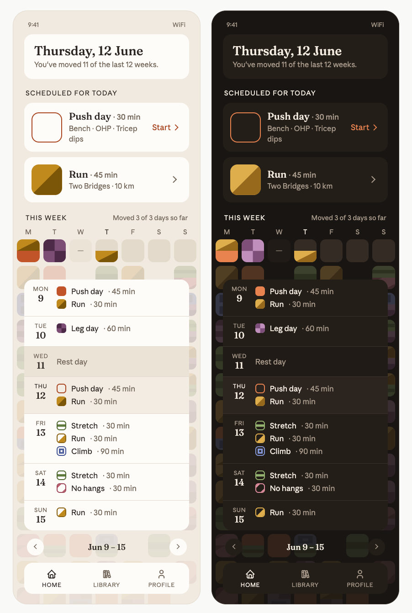
Homepage concepts — next versionDesigned by my
partner; I consulted from a UX perspective.
Delegation. While we were discussing the app’s future
and improvements we wanted to make on the UI, my partner asked to take on
designing a few options for fun. He wanted to learn how to design UI on
VS Code/Claude/Figma. Since he is both visually talented and artistic, it made
sense to delegate this to him.
Feedback
He created a few iterations of the homepage and shared the designs with me. We
went through a couple of back and forth exchanges, and I shared my feedback.
Contrast. One version had a color scheme that made it
difficult to distinguish today’s scheduled activities from the
background.
Visual hierarchy. The start button under “Schedule for
Today” took over its section, taking the user’s eye away from the
workout information.
Accessibility. An earlier version of this UI didn’t show
patterns within the colorful blocks. I noted the need to add patterns to help
distinguish activities from one another. Colors only were not enough to visually
distinguish one workout from another — beyond the text itself. While both
current users don’t have a visual impairment, it didn’t exclude the
possibility that we might one day share the app with friends & family who
would benefit from an accessible UI.
The mosaic
Meaning. The mosaic background represents the overall effort
put in by us as users towards our health goals. Each colorful block represents a
completed training session, and overall, the time and effort we dedicated toward
their training.
Bigger picture. Looking at the mosaic is looking at the
bigger picture: every training session we did doesn’t exist just as a
lonely occurrence, gone and dusted once completed. It is part of a bigger goal
and the mosaic is a tangible proof of it.
Long-term vision. This design helps us envision our training
as a long-term project, creating a direction to work towards. Not just metrics or
trends that only exist in the moment they are looked over.
Lego inspiration. My partner drew inspiration from Lego. Each
piece just looks like a lonely piece on its own, but stacked up, creates a whole
world, a composition made possible by each individual piece added.
Block training. This design also strongly connects with one
of the key features we’re looking at integrating back in the next version:
the block training feature.
08 Reflection
What would I do differently, knowing what I do now?
Advocate for keeping the training-block feature in the MVP
My initial low-fi sketches included the feature. I had planned to include the
block structure into the MVP. My partner advocated for a faster app release, and
the training block feature was incompatible with this objective. After discussion,
I agreed to prioritize fast-tracking the app release. It did allow us to start
building good training habits fast, and identify amends needed. But fast-forward a
couple of weeks post-release, we individually noted that we were both missing this
feature. Especially when working on scheduling our training ahead of the week. It
wasn’t essential to our training organization. But we had ended up with a
feature that turned out to be the one we enjoyed using the most in the
process.
If I were to create the app again, with the same angle of improving an existing
process into a different format, I would ask myself these two questions:
What feature(s) am I enjoying the most in the current set-up?
How different would the user experience be if I didn’t include this
feature in the next system?
Improve my Claude/VS Code iterative design process
I had split the iterations and VS Code files by core action flows: homepage,
library, workout builder, live workout. I thought it would be the best way to
divide the work, especially for iterating purposes. I found that using AI to
vibe-code on VS Code can be a fair bit clunky when making any changes on the
wireframes. The process is not as interactive and smooth as Figma, changes can get
lost in the myriad of frames, and the platform itself isn’t optimal to get a
good overall view of the whole flow. I would approach the iterative process
differently by dividing the core action in sub-sections, each with its own
file.
For example: [homepage → Weekly Schedule → Edit flow], as opposed to
having one omnipotent file where everything happens.
Source a Kanban board better suited for my needs
Trello was my first port of call, since I was familiar with the tool and it had
a free plan, I managed the product phases there. One limitation I came across was
the lack of dependency-setting. I would have liked to be able to connect tickets
together to build in redundancy and give myself more support in tracking complex
tasks.
What did I learn about my own PM instincts and blind spots?
PM instinct n°1
Ability to think in second and third order
The product management process helped me validate something I couldn’t
quite place my finger on or articulate clearly yet.
I have a natural aptitude in evaluating a situation beyond what is
immediately in front of me. I can synthesize the moving parts of a complex
structure, important information, dependencies involved and constraints. Which
in turn, helps me trace it downstream to visualize stakeholder interactions or
potential frictions. It really comes in handy ahead of making decisions.
That’s how I realized that we needed to isolate making changes in a
workout occurrence vs within the workout saved in the library.
PM instinct n°2
High-propensity towards empathy
I have a natural tendency to put myself in the shoes of different
users/stakeholders, and it helps me understand where and sense where a path
creates friction or harm for them specifically.
Blind spots
Analysis paralysis — I found it difficult at times to
navigate finding solutions when there were too many variables to consider and no
obvious one solution. The solution I found to this blind spot is trusting in the
iterative process of product management, as well as relying on agile
methodologies since they make it possible to keep improving based on everything
learned with each iteration.
What’s uncertain or unresolved?
Changing the UI
I really like the design my partner created for a potential new app UI and
would like to update the current version with his design. It would make the app
more unique. We could add a more personable touch to our product. However,
I’m not sure if it is absolutely necessary for us to update the UI in the
next version. There are some other features I would like to implement first.
Additionally, the time my partner can dedicate to Ganbare is limited so I’m
currently weighing the pros and cons.
Best implementation of the training block
At this stage, I don’t know yet how to re-introduce this feature in the
app, and what dependency needs to exist for the different moving parts. Do we
need:
A stand-alone check list that:
Lives on the homepage?
Can be created and edited separately?
A feature within the workout builder that gives the user the option to add
the workout to an overall training block?
An individual bottom navigation bar icon where the training block features
live?
Special mention
To my partner who helped me bring my vision of Ganbare to life, discussed the
user actions with me at length, and shared his knowledge with me.
About
I'm interested in how products shape our daily lives. Vice versa, how we consumers shape the products being made. My goal is to
build products through smart, intentional design, ultimately solving real human problems at a large
scale.
A short view of my experience — from events and account management into
product and UX.
2022 — 2024
Events & Community Officer, The Castles Climbing Centre
Owned the full event lifecycle, delivering 10+ B2B and community events a
year for brands like Arc’teryx and Reel Rock.
2018 — 2022
Account Manager, The Truman Brewery
Managed 50+ accounts end-to-end — including Netflix and Activision —
generating ~£90k in annual venue hire revenue.
2017
Client Coordinator, FITCH
Client coordination at a global brand and design consultancy.
2011 — 2013
Client Coordinator, Dallorso Conseils
Early client coordination role, alongside undergraduate studies.
Certificates
2025 — 2026
Product Management Certificate, IBM
Covered the full product lifecycle from ideation to commercialisation.
Case study included market and user research, strategic planning, PM methodologies such as Agile.
2025
UX Design Certificate, Google
Practised the full design-thinking cycle — research, ideation, Figma
prototyping, usability testing — with a focus on accessible, equity-led design.
Higher Education
2015 — 2017
MA Cultural & Creative Industries, King’s College London
Postgraduate study in cultural and creative industries.
2011 — 2014
BA English LLCE, Institut C. de Paris
Undergraduate degree in English language, literature and civilisation.
Product Strategy
User Research
Wireframing
Prototyping
Roadmapping
Figma
Usability Testing
Prioritisation
Get in touch
The best way to get in touch with me is by email. I’m open to
product and design roles, and always happy to talk process.